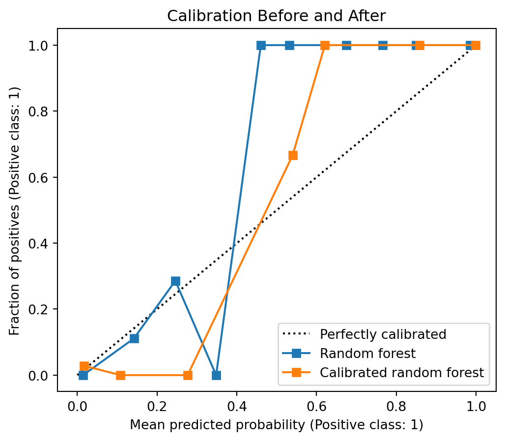

Classification is not only about predicting a label. It is also about making a decision under uncertainty.
In regression, the main goal is often to predict a continuous response accurately. In classification, a model may first estimate a probability or score, and then we must decide how that score should be converted into an action.
This makes classification evaluation closely connected to:
statistical decision theory,
asymmetric error costs,
hypothesis testing,
detection theory,
threshold selection,
probability calibration.
Metrics such as accuracy, precision, recall, ROC curves, AUC, calibration curves, and Brier score answer different questions. A good evaluation should be clear about which question is being asked.
2.1 Binary Classification Setup
Suppose the response is binary:
\[
Y\in\{0,1\}.
\]
We call \(Y=1\) the positive class and \(Y=0\) the negative class.
A classifier produces a predicted label
\[
\hat Y\in\{0,1\}.
\]
The four possible outcomes are summarized by the confusion matrix.
Predicted positive
Predicted negative
True positive class
TP
FN
True negative class
FP
TN
Here:
TP means true positive,
FP means false positive,
FN means false negative,
TN means true negative.
The confusion matrix is the starting point for most threshold-based classification metrics.
2.2 Accuracy
Accuracy is the proportion of correctly classified observations:
false positives and false negatives have similar costs,
the classification threshold is already meaningful.
However, accuracy can be misleading.
Suppose only \(1\%\) of observations are positive. A classifier that always predicts negative has \(99\%\) accuracy, but it never detects a positive case. In many applications, that classifier is useless.
CautionAccuracy is not enough
Accuracy implicitly treats all mistakes as equally costly.
When classes are imbalanced or error costs are asymmetric, accuracy can hide the most important behavior of the classifier.
2.3 Recall
Recall is defined as
\[
\text{Recall}
=
\frac{TP}{TP+FN}.
\]
Recall answers the question:
Among all truly positive observations, how many did we detect?
In probability notation,
\[
\text{Recall}
=
P(\hat Y=1\mid Y=1).
\]
Recall is also called:
sensitivity,
true positive rate,
TPR.
High recall means few false negatives. Low recall means many true positive cases were missed.
2.3.1 Recall and Statistical Power
Recall has a direct connection to hypothesis testing.
Suppose we think of the classification problem as testing
\[
H_0:Y=0
\quad\text{versus}\quad
H_1:Y=1.
\]
Predicting positive is like rejecting \(H_0\). Predicting negative is like failing to reject \(H_0\).
Under this interpretation:
a false positive is a Type I error,
a false negative is a Type II error,
recall is statistical power.
Thus
\[
\text{Recall}
=
1-\text{Type II error rate}.
\]
Recall measures the ability to detect true signals.
2.4 Precision
Precision is defined as
\[
\text{Precision}
=
\frac{TP}{TP+FP}.
\]
Precision answers the question:
Among all observations predicted positive, how many are truly positive?
In probability notation,
\[
\text{Precision}
=
P(Y=1\mid \hat Y=1).
\]
Precision is also called positive predictive value.
High precision means positive predictions are trustworthy. Low precision means many predicted positives are false alarms.
2.4.1 Precision Versus Recall
Precision and recall condition on different events.
Recall conditions on the truth:
\[
P(\hat Y=1\mid Y=1).
\]
Precision conditions on the prediction:
\[
P(Y=1\mid \hat Y=1).
\]
This distinction is very important.
Recall asks whether we find the positives. Precision asks whether our positive discoveries are reliable.
2.5 Bayes’ Rule and Class Imbalance
Precision and recall are connected by Bayes’ rule.
This formula explains why precision can be low for rare events.
Even if recall is high, a small false positive rate may still create many false positives when the negative class is much larger than the positive class.
If false negatives are very costly, then \(C_{FN}\) is large and the threshold becomes small. The classifier should predict positive more aggressively.
2.7.1 Medical Screening
In medical screening, missing a serious disease may be much worse than sending a healthy patient for an additional test. Therefore false negatives are costly.
The threshold should often be lower, so the classifier prioritizes recall.
2.7.2 Spam Filtering
In spam filtering, putting an important legitimate email into spam may be very costly to the user. Therefore false positives may be more costly.
The threshold should often be higher, so the classifier prioritizes precision.
2.8 F1 Score
The F1 score combines precision and recall:
\[
F_1
=
\frac{2PR}{P+R},
\]
where \(P\) is precision and \(R\) is recall.
Equivalently,
\[
F_1
=
\frac{2TP}{2TP+FP+FN}.
\]
The F1 score is the harmonic mean of precision and recall.
The harmonic mean strongly penalizes imbalance. If precision is high but recall is near zero, then F1 is near zero. If recall is high but precision is near zero, then F1 is also near zero.
F1 is useful when we want a single number that balances precision and recall. However, it assumes precision and recall are equally important. In applications where one type of error is more costly, a different metric or an explicit cost function may be better.
2.9 ROC Curves
ROC stands for receiver operating characteristic.
An ROC curve plots:
\[
TPR
=
\frac{TP}{TP+FN}
\]
against
\[
FPR
=
\frac{FP}{FP+TN}
\]
as the classification threshold changes.
The true positive rate is recall. The false positive rate is
\[
FPR
=
P(\hat Y=1\mid Y=0).
\]
2.9.1 ROC and Hypothesis Testing
ROC curves have a natural hypothesis testing interpretation.
Recall:
TPR is power,
FPR is Type I error rate.
Therefore an ROC curve shows
\[
\text{power}
\quad\text{versus}\quad
\text{Type I error rate}
\]
across all possible thresholds.
The ideal classifier reaches the upper-left corner:
\[
FPR=0,
\quad
TPR=1.
\]
A classifier close to the diagonal line behaves almost like random guessing.
2.10 AUC
AUC is the area under the ROC curve.
AUC summarizes ranking performance across all possible thresholds.
Let \(s(X^+)\) be the score for a randomly selected positive observation, and let \(s(X^-)\) be the score for a randomly selected negative observation. Then
\[
AUC
=
P\left(s(X^+)>s(X^-)\right),
\]
up to small corrections for ties.
Thus AUC has a clean interpretation:
AUC is the probability that a random positive observation receives a higher score than a random negative observation.
This is why AUC is threshold-free. It evaluates ranking quality, not a particular threshold decision.
CautionAUC is not calibration
AUC can be excellent even when predicted probabilities are numerically wrong.
AUC asks whether positives are ranked above negatives. It does not ask whether predicted probabilities are trustworthy.
2.11 Precision-Recall Curves
A precision-recall curve plots precision against recall as the classification threshold changes.
PR curves are especially useful for imbalanced data.
The reason is that precision directly accounts for false positives among predicted positives:
\[
\text{Precision}
=
\frac{TP}{TP+FP}.
\]
In rare-event detection, even a small false positive rate can create many false positives. ROC curves may look strong because FPR is normalized by all true negatives, but precision may still be poor.
PR curves are often preferred for:
fraud detection,
medical diagnosis,
anomaly detection,
information retrieval,
other rare positive class problems.
2.12 Three Evaluation Goals
Classification evaluation has at least three distinct goals.
Goal
Main question
Common tools
Decision quality
Are the hard classifications useful?
Accuracy, precision, recall, F1
Ranking quality
Are positives ranked above negatives?
ROC curve, AUC, PR curve
Probability quality
Are predicted probabilities trustworthy?
Calibration curve, Brier score, log loss
These goals are related, but they are not identical.
A model can have good AUC and poor calibration. A model can have good accuracy and poor recall. A model can have high recall and poor precision.
2.13 Bias-Variance in Classification Evaluation
The bias-variance tradeoff also appears in classification, but it is easiest to state for probability estimation.
Suppose the true conditional probability is
\[
p(x)=P(Y=1\mid X=x),
\]
and a fitted model estimates this probability by
\[
\hat p(x).
\]
At a fixed point \(x_0\), the Brier loss is squared error for a binary outcome:
bias means the model systematically estimates probabilities too high or too low;
variance means the estimated probabilities change a lot across training samples;
\(p(x_0)(1-p(x_0))\) is irreducible Bernoulli noise.
This is why probability-quality metrics such as Brier score and log loss are closely connected to the bias-variance tradeoff.
Flexible classifiers, such as deep trees and random forests, may reduce bias by capturing nonlinear structure, but their raw probability estimates may have higher variance or poor calibration. Simpler or regularized models may have higher bias but more stable probability estimates.
NoteThresholds and bias-variance
Changing the classification threshold does not change \(\hat p(x)\) itself. It changes the decision rule built on top of \(\hat p(x)\).
So threshold tuning trades off false positives and false negatives. Model tuning trades off bias and variance in the fitted scores or probabilities.
2.14 Calibration
Calibration asks whether predicted probabilities are numerically meaningful.
Suppose a model predicts
\[
\hat p(x)=0.8.
\]
If the model is well calibrated, then among many observations receiving predicted probability near \(0.8\), about \(80\%\) should truly be positive.
Thus calibration concerns probability quality.
It is different from classification accuracy and ranking quality.
2.14.1 Reliability Diagram
A calibration curve, also called a reliability diagram, is built as follows:
Group observations into bins based on predicted probability.
For each bin, compute the average predicted probability.
For each bin, compute the observed positive frequency.
Plot observed frequency against average predicted probability.
For a perfectly calibrated model, the curve follows the diagonal line:
Log loss strongly penalizes confident wrong predictions.
Both Brier score and log loss evaluate probability quality, not only hard classification decisions.
2.15 Calibration Methods
If a model produces useful rankings but poor probabilities, we can sometimes calibrate its scores.
Two common calibration methods are:
Platt scaling,
isotonic regression.
2.15.1 Platt Scaling
Platt scaling fits a logistic regression model using the original classifier score as the predictor.
If the original model produces a score \(s(x)\), Platt scaling estimates
\[
P(Y=1\mid s(x)).
\]
This learns a sigmoid transformation of the scores.
2.15.2 Isotonic Regression
Isotonic regression learns a monotone transformation of the scores.
It is more flexible than Platt scaling because it does not assume a sigmoid shape. However, it can overfit when the calibration set is small.
NoteCalibration data
Calibration should be learned on data not used to fit the original model.
Otherwise, the calibrated probabilities may look better than they really are.
2.16 Python Example: Breast Cancer Classification
We now use the breast cancer dataset from sklearn. The goal is to classify tumors as malignant or benign. This example shows how to compute threshold-based metrics, ROC and PR curves, and calibration curves.
First load the data and split it into training and test sets.
import numpy as npimport pandas as pdimport matplotlib.pyplot as pltfrom sklearn.datasets import load_breast_cancerfrom sklearn.model_selection import train_test_splitcancer = load_breast_cancer(as_frame=True)X = cancer.datay_original = cancer.target# In this dataset, target 0 is malignant and target 1 is benign.# We define malignant as the positive class.y =1- y_originalX_train, X_test, y_train, y_test = train_test_split( X, y, test_size=0.3, stratify=y, random_state=42,)pd.Series(y_test).value_counts().sort_index()
target
0 107
1 64
Name: count, dtype: int64
We fit logistic regression and a random forest. Logistic regression is often a strong baseline for calibrated probabilities. Random forests often have strong classification performance but may produce less calibrated probabilities.
This comparison is also a bias-variance example. Logistic regression is less flexible and may have more bias if the true boundary is nonlinear. The random forest is more flexible and can reduce bias, but its probability estimates may need calibration.
The confusion matrix shows which kinds of mistakes the model makes. In a medical setting, false negatives may be especially important because they correspond to missed malignant cases.
2.16.2 Threshold Tuning
Now examine how metrics change as the threshold changes.
The calibration curve compares predicted probabilities with observed frequencies. The Brier score and log loss summarize probability quality numerically.
2.16.7 Calibrating a Random Forest
If a model ranks observations well but has poor calibration, we can calibrate it using held-out calibration folds.
Calibration can improve probability quality, but it does not necessarily improve AUC. This is expected because calibration changes the probability scale, while AUC mainly depends on ranking.
fig, ax = plt.subplots(figsize=(6, 5))CalibrationDisplay.from_predictions( y_test, rf_prob, n_bins=10, name="Random forest", ax=ax,)CalibrationDisplay.from_predictions( y_test, rf_cal_prob, n_bins=10, name="Calibrated random forest", ax=ax,)ax.set_title("Calibration Before and After")plt.show()

2.17 Summary
Classification evaluation is multidimensional.
Accuracy measures the overall fraction of correct predictions, but it can be misleading under class imbalance or asymmetric error costs.
Recall measures detection ability:
\[
P(\hat Y=1\mid Y=1).
\]
Precision measures the reliability of positive predictions:
\[
P(Y=1\mid \hat Y=1).
\]
ROC curves and AUC evaluate ranking quality across thresholds. PR curves are often more informative for rare positive classes.
Calibration evaluates whether predicted probabilities are numerically trustworthy. Brier score and log loss are proper scoring rules for probability forecasts.
The most important practical message is:
Fit the model, evaluate the ranking, choose the threshold according to the decision problem, and check whether the probabilities are calibrated if probabilities will be used directly.